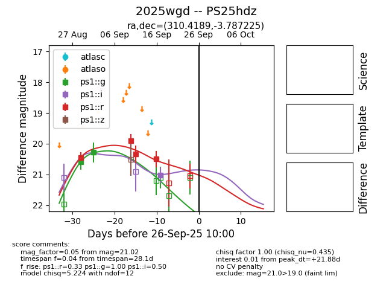
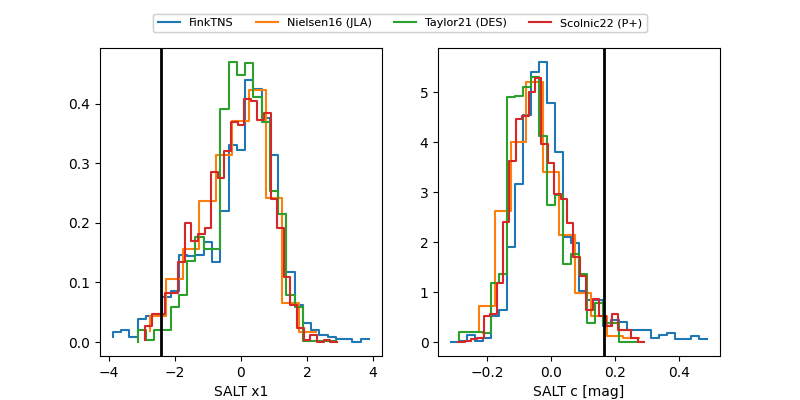

TNS: 2025wgd
YSE: 2025wgd
2025wgd (yse,tns)
PS25hdz (panstarrs)
equatorial (ra, dec) = (310.4189,-3.78722)
galactic (l, b) = (42.6644,-26.16693)


last ps1::g=20.28, ps1::i=21.02, ps1::r=20.50
2 ps1::g, 1 ps1::i, 4 ps1::r detections